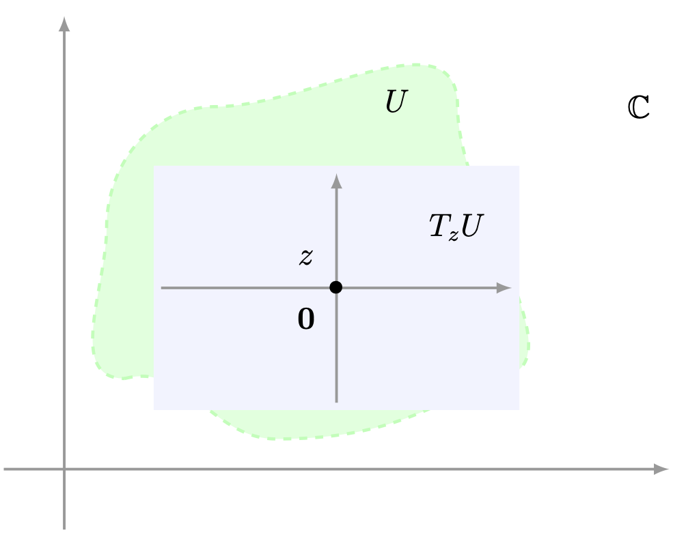
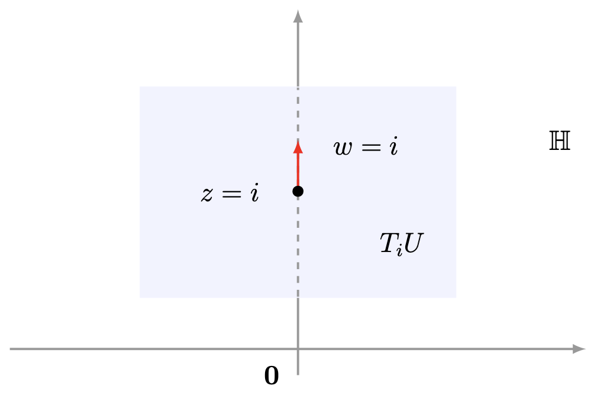
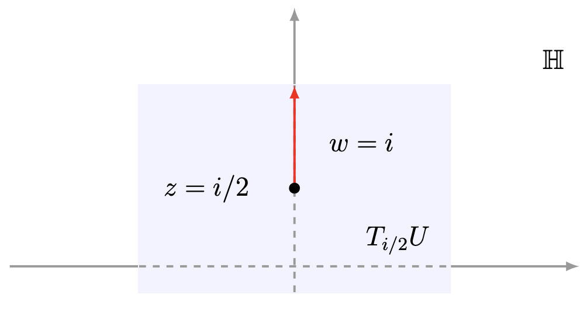
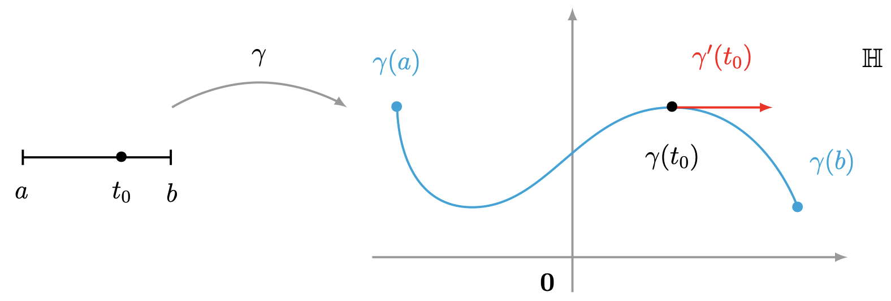
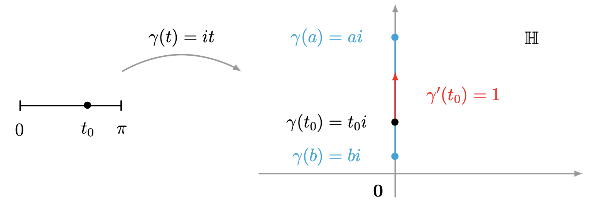
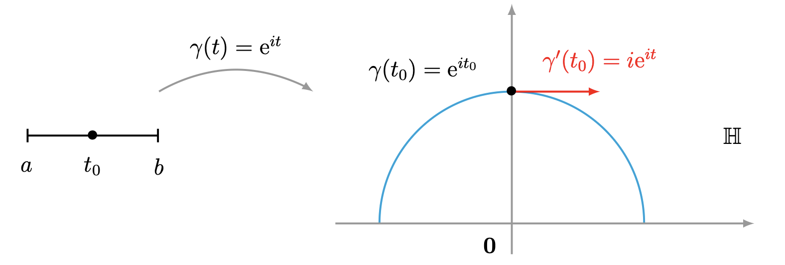
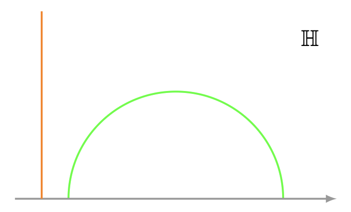
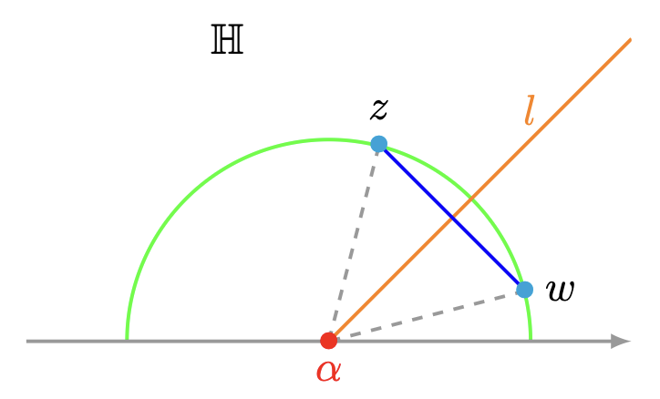
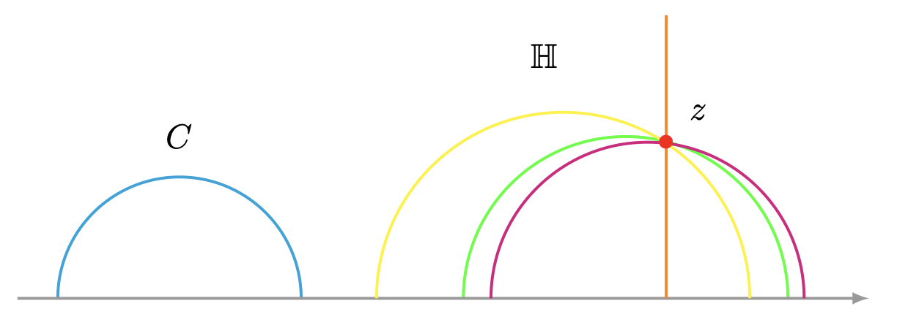

The Elements of the Greek Euclid (325 BC - 265 BC) is the first written record, available to humanity, of an axiomatic system (see Euclid 1926). This writing has also been one of the most influential works of scientific thought of humanity. Specifically, the Elements is composed of 13 books, in which the author developed the foundations of elementary geometry, along with some concepts of arithmetic. To build geometry, the Greek author defined the main objects of the theory: point, line, plane among others. Then, based on logic, Euclid developed some fundamental laws about these objects (postulates or axioms). Let us recall the first five of these postulates.
Euclid's fifth postulate draws attention, since at first glance it does not seem intuitive to geometric intuition; so during the 19th century attempts were made to prove it from the four remaining onesIf the reader is interested in knowing the historical development of non-Euclidean geometries we suggest consulting Santaló, 1976.. There was no success, however, statements equivalent to postulate V appeared. We will state some of them.
During the 19th century the following reasoning flourished: If Euclid's postulate V is a "true" postulate, the fact of denying it, accepting the other four, should not lead to contradictions. Thus it was that the Hungarian Johann Bolyai (1802-1860), the German Karl Friedrich Gauss (1777-1855), the Russian Nikolai Lobachevsky (1793-1856) and others discovered non-Euclidean geometries.
To construct the hyperbolic geometry given by Lobachevsky we need four ingredients:
-
An ambient space (upper half-plane)
\[ U:=\left\{z\in\mathbb{C}: \operatorname{Im}(z)>0\right\}, \]where the geometry takes place. We will endow the upper half-plane \(U\) with a (geometric) hyperbolic Riemannian metric \(\mu_{h}\) and, from it we will induce a distance function \(\rho.\) The upper half-plane \(U\) together with this hyperbolic metric \(\mu_{h}\) is known as the hyperbolic plane or Lobachevsky plane \(\mathbb{H}.\)
- The group of isometries of \(\mathbb{H},\) that group consisting of all bijections from \(\mathbb{H}\) to itself that preserve the distance \(\rho.\)
- The complex numbers that live in \(\mathbb{H}\) are the points and, from the Riemannian metric \(\mu_{h}\) we will discover, for this case, that the "straight lines" (they will be called hyperbolic lines) are the circumferences orthogonal to the real axis.
- Postulates about \(\mathbb{H}.\) We will see that the points and lines are governed by the first four postulates of Euclidean geometry. Furthermore, the negation of the fifth postulate is valid, that is, it is valid: given a "straight line" \(\ell\) in \(\mathbb{H}\) and a point \(p\in\mathbb{H}\) exterior to it, then through the point \(p\) there pass infinitely many "straight lines" of \(\mathbb{H}\) that do not intersect \(\ell.\)
Hyperbolic Riemannian Metric
Given the open subset $U\subset \mathbb{C}$, the tangent plane associated to the complex number $z\in U$ is the vector space \[ T_{z}U:=\{z\}\times \mathbb{C}. \]
Important! The tangent space \(T_{z}U\) is isomorphic to \(\mathbb{C}\) and can be thought geometrically as a copy of the complex plane such that its zero \(\mathbf{0}\) is glued onto the complex number \(z.\)

One of the classical examples is the Euclidean Riemannian metric \(\mu_{e}\) for the complex plane \(\mathbb{C},\) which assigns to each complex number \(z\) the usual dot product on the tangent plane \(T_{z}\mathbb{C},\)
\begin{equation} \mu(z):=\langle \,\, , \, \rangle^{z}_{c} : T_{z}\mathbb{C}\times T_{z}\mathbb{C} \to \mathbb{C}. \end{equation}Note that the function \(g_{i,j} : \mathbb{C} \to \mathbb{C},\) given by
\[ g_{i,j}(z)=\langle e_{i} , e_{j} \rangle^{z}_{c}=\delta_{i,j}, \]is differentiable, for each \(i,j\in\{1,2\},\) since it is the constant function.
Let us introduce the hyperbolic Riemannian metric.
which corresponds to each complex number \(z\in U\) the inner product \begin{equation}\label{ecuacion:metrica_riemanniana_hiperbolica} \mu_{h}(z):= \langle \, \, , \, \rangle_{h}^{z}= \dfrac{\langle \,\, , \, \rangle^{z}_{c}}{\left(\operatorname{Im}(z)\right)^2}, \end{equation} on the tangent space \(T_{z}U,\) is a Riemannian metric. This Riemannian metric is known as the hyperbolic metric.
- (1) For each \(z\in U\) the function \(\mu_{h}(z)\) is an inner product on the tangent space \(T_{z}U.\)
- (2) The function \(g_{i,j}\) is differentiable, for each \(i,j\in\{1,2\}.\)
Recall that the tangent space \(T_{z}U\) is isomorphic to the \(\mathbb{R}\) vector space \(\mathbb{C}\) and the function \(\langle \,\, , \, \rangle^{z}_{e}\) is an inner product on \(T_{z}U.\) From Problem 2 it follows that the function \(\langle \,\, ,\,\rangle_{h}^{z}: T_{z}U\times T_{z}U\to\mathbb{C}\) given by
\[ \langle z_{1},z_{2}\rangle_{h}^{z}:=\dfrac{\langle z_{1} , z_{2} \rangle_{c}^{z}}{(\operatorname{Im}(z))^2}, \]is also an inner product.
If we consider the canonical basis \(\{e_1,e_2\}\) for \(\mathbb{C},\) we have that for any \(i,j\in\{1,2\},\) the function \(g_{i,j}: U \to \mathbb{C}\) given by
\[ g_{i,j}(z)=\dfrac{\langle e_i , e_j \rangle_{c}^{z}}{\left(\operatorname{Im}(z)\right)^2}=\dfrac{\delta_{i,j}}{\left(\operatorname{Im}(z)\right)^2}, \]is differentiable. This statement is true because the entries of the Jacobian matrix
\[ D_{z} g_{i,j}=\left(0, \frac{-2 \delta_{i,j}}{(\operatorname{Im}(z))^3}\right), \]are continuous on \(U,\) so the Theorem of the Sufficient Condition for Differentiability of a vector function guarantees that \(g_{i,j}\) is differentiable.
Recall that an inner product provides a way to measure vectors (norm), this implies that the inner product \(\mu_{h}\) provides us with a norm of the vector \(w\) in the tangent space \(T_z\mathbb{H},\) for each \(z\in \mathbb{H}.\)
Curiosity If we fix a vector \(w\) on tangent spaces of points that approach the real axis, then the hyperbolic norm of that vector becomes as large as one wishes. For example, consider the complex numbers in the hyperbolic plane \(\mathbb{H}\) that lie on the straight line segment
\[ I=\left\{z=it: t\in (0,1]\right\}. \]Now, consider the vector \(w=i\) in the tangent space \(T_{z}\mathbb{H},\) for each \(z\in I.\) Then the hyperbolic norm of \(w\) grows as \(z\) approaches the origin \(\mathbf{0}.\) Let us study this statement with the following cases:
- \(\ast\) For \(t=1,\) we take the complex number \(z=i\in I,\) then the hyperbolic norm
of the vector \(w=i\) in the tangent space \(T_{z}\mathbb{H}=T_{i}\mathbb{H}\) is
\[ \Vert i \Vert_{h}:=\sqrt{\langle i,i \rangle_{h}}=\sqrt{\dfrac{\langle i, i\rangle_{c}^{i}}{\left(\operatorname{Im}(i)\right)^{2}}}=\dfrac{\sqrt{\langle i, i\rangle_{c}^{i}}}{\operatorname{Im}(i)}=\dfrac{\vert i \vert}{\operatorname{Im}(i)}=\frac{1}{1}=1. \]
- \(\ast\) For \(t=1/2,\) we take the complex number \(z=i/2\in I,\) then the hyperbolic
norm of the vector \(w=i\) in the tangent space \(T_{z}\mathbb{H}=T_{i/2}\mathbb{H}\) is
\[ \Vert i \Vert_{h}:=\sqrt{\langle i,i \rangle_{h}}=\sqrt{\dfrac{\langle i, i\rangle_{c}^{i/2}}{\left(\operatorname{Im}(i/2)\right)^{2}}}=\dfrac{\sqrt{\langle i, i\rangle_{c}^{i/2}}}{\operatorname{Im}(i/2)}=\dfrac{\vert i \vert}{\operatorname{Im}(i/2)}=\frac{1}{1/2}=2. \]

Hyperbolic norm of the vector $i\in T_{i}U.$ - \(\ast\) For \(t=1/n,\) with \(n\in\mathbb{N},\) we take the complex number \(z=i/n\in
I,\)
then the hyperbolic norm of the vector \(w=i\) in the tangent space
\(T_{z}\mathbb{H}=T_{i/n}\mathbb{H}\) is
\[ \Vert i \Vert_{h}:=\sqrt{\langle i,i \rangle_{h}}=\sqrt{\dfrac{\langle i, i\rangle_{c}^{i/n}}{\left(\operatorname{Im}(i/n)\right)^{2}}}=\dfrac{\sqrt{\langle i, i\rangle_{c}^{i/n}}}{\operatorname{Im}(i/n)}=\dfrac{\vert i \vert}{\operatorname{Im}(i/n)}=\frac{1}{1/n}=n. \]

Hyperbolic norm of the vector $i\in T_{i/2}U.$
As \(n\) approaches \(\infty\) the hyperbolic norm of the vector \(i\) also approaches \(\infty,\) that is,
\[ \lim\limits_{n\to \infty} \Vert i \Vert_{h}=\lim\limits_{n\to \infty} \sqrt{\dfrac{\langle i, i\rangle_{c}^{i/n}}{\left(\operatorname{Im}(i/n)\right)^{2}}}=\lim\limits_{n\to \infty } n=\infty. \]Curve and Hyperbolic Norm
From the norm we will define the hyperbolic length of a piecewise differentiable curve in \(\mathbb{H}.\) Let us take a short walk through the concept of curve.
Furthermore, we will say that the curve \(\gamma\) is differentiable at the point \(t_0\in (a,b)\) if the limit exists
\[ \lim_{t\to t_0} \frac{\gamma(t)-\gamma(t_0)}{t-t_0} =\lim_{t\to t_0}\frac{x(t)-x(t_0)}{t-t_0}+i \left(\lim_{t\to t_0}\frac{y(t)-y(t_0)}{t-t_0}\right). \]If this limit exists we will denote it by
\[ \gamma'(t_0)=\lim_{t\to t_0}\frac{x(t)-x(t_0)}{t-t_0}+i\left( \lim_{t\to t_0}\frac{y(t)-y(t_0)}{t-t_0}\right)=x'(t_0)+iy'(t_0) \]and we will call it the derivative of \(\gamma\) at the point \(t_{0}\).

Likewise, the derivative \(\gamma'(a)\) and \(\gamma'(b)\) exists when the appropriate one-sided limit exists e.g.,
\[ \gamma'(a)=\lim_{t\to a^{+}} \frac{\gamma(t)-\gamma(a)}{t-a} =\lim_{t\to a^{+}}\frac{x(t)-x(a)}{t-a}+i\left( \lim_{t\to a^{+}}\frac{y(t)-y(a)}{t-a}\right). \]Geometrically, the derivative \(\gamma'(t_{0})\) is the tangent vector of the curve \(\gamma\) at the point \(t_{0}.\) Furthermore, this tangent vector \(\gamma'(t_{0})\) is in the tangent space \(T_{\gamma(t_{0})}U.\)
We will say that the curve \(\gamma\) is piecewise differentiable if there exists a finite number of points \(a=t_1\lt t_2\lt \ldots\lt t_{n-1}\lt t_n=b\) in the interval \([a,b]\) such that \(\gamma'(t_0)\) the derivative of \(\gamma\) at each point \(t_0\in (t_i,t_{i+1})\) exists, with \(i\in\{1,\ldots,n-1\}.\)
Let us study the following two examples of curves in the hyperbolic plane $\mathbb{H}$.
satisfies the following properties:
- (1) The function \(\gamma\) is a curve, because the real-valued functions given by \(x(t)=0\) and \(y(t)=t\) with \(t\in[a,b]\) are continuous.
- (2) The trace of \(\gamma\) is the Euclidean straight line segment in \(\mathbb{H}\) with endpoints the points \(ai\) and \(bi,\) \[ \gamma^{\ast}=\left\{z\in\mathbb{H}: \operatorname{Re}(z)=0 \text{ and } a\leq \operatorname{Im}(z) \leq b\right\}. \]
- (3) For every \(t\in [a,b],\) the tangent vector to the curve \(\gamma\) at the point
\(t\) is
\[
\gamma'(t)=i\in T_{\gamma(t)}\mathbb{H}=T_{it}\mathbb{H}.
\]
Its hyperbolic norm is
\[ \|\gamma'(t)\|_{h}=\sqrt{\langle \gamma'(t),\gamma'(t)\rangle}_{h}=\dfrac{\sqrt{\langle \gamma'(t),\gamma'(t)\rangle_{c}^{\gamma(t)}}}{\operatorname{Im}(\gamma(t))}=\dfrac{\vert \gamma'(t) \vert}{\operatorname{Im}(\gamma(t))}=\dfrac{\vert i \vert}{\operatorname{Im}(it)}=\frac{1}{t}. \]

Curve $\gamma(t)= it.$
satisfies the following properties.

- (1) The function \(\gamma\) is a curve, because the real-valued functions given by \(\cos(t)\) and \(\operatorname{sen}(t)\) with \(t\in(0,\pi)\) are continuous.
- (2) The trace of \(\gamma\) is the (upper) curve segment of the circumference with center the origin and radius \(1,\) \[ \gamma^{\ast}=\left\{z\in\mathbb{H}: z=e^{it} \text{ and } 0 \lt t \lt \pi \right\}. \]
- (3) For every \(t\in (0,\pi),\) the tangent vector to the curve \(\gamma\) at the point \(t\) is \[ \gamma'(t)=i e^{it}\in T_{\gamma(t)}\mathbb{H}=T_{e^{it}}\mathbb{H}. \] Its hyperbolic norm is \[ \|\gamma'(t)\|_{h}=\dfrac{\vert \gamma'(t) \vert}{\operatorname{Im}(\gamma(t))}=\dfrac{\vert i e^{it} \vert}{\operatorname{Im}(e^{it})}=\frac{1}{\operatorname{sen}(t)}. \]
Curve Length and Hyperbolic Distance
An advantage of this norm is that we have the possibility of defining a way to determine the hyperbolic length of a piecewise differentiable curve in the hyperbolic plane \(\mathbb{H}.\) In turn, the hyperbolic length provides us with a distance function (metric) for \(\mathbb{H}.\)
the hyperbolic length of \(\gamma\) is given by
\[ \ell_{h}(\gamma):=\int_{a}^{b} \Vert \gamma'(t) \Vert_{h} dt=\int_{a}^b \dfrac{\sqrt{(x'(t))^2+(y'(t))^2}}{y(t)}dt=\int_{a}^{b} \dfrac{\vert \gamma '(t) \vert}{y(t)}dt. \]The hyperbolic distance between two points \(z\) and \(w\) of the hyperbolic plane \(\mathbb{H},\) which we will denote by
\begin{equation}\label{ec:longitud_hiperbolica_entre_z_w} \rho(z,w)=\inf_{\gamma} \left\{\ell_h(\gamma)\right\}, \end{equation}is the infimum of the hyperbolic lengths of the piecewise differentiable curves in \(\mathbb{H}\) with final points \(z\) and \(w.\)
The reader can verify that this logarithm on the right side of the previous equality corresponds to the hyperbolic length of the curve \(\gamma\) given in Example 3.
Now, consider a piecewise differentiable curve \(\beta:[a_{1},b_{1}]\to \mathbb{H},\) defined by
\[ \beta(t)=x(t)+iy(t), \]such that its endpoints satisfy \(\beta(a_{1})=ai\) and \(\beta(b_{1})=bi.\) We will prove that the hyperbolic length of \(\beta\) is greater than or equal to the value \(\ln\left(\dfrac{b}{a}\right)\) i.e.,
\[ \ell_{h}(\gamma) = \ln\left(\frac{b}{a}\right)\leq \ell_{h}(\beta). \]Since \(\beta\) is an arbitrary curve, then
\[ \rho(ai,bi)\leq \ell_{h}(\beta). \]On the other hand, the hyperbolic length of the curve \(\beta\) is given by
Recall that for any real numbers \(x,y\in \mathbb{R}\) the inequality
\[ y \leq \sqrt{x^2+y^2}. \]Since \(y(t)>0\) for all \(t\in [a_{1},b_{1}],\) then
\[ \dfrac{y'(t)}{y(t)}\leq \dfrac{\sqrt{(x'(t))^2+(y'(t))^2}}{y(t)}, \]for each \(t\in[a_{1},b_{1}].\) Using the properties of the integral it follows that
\[ \begin{aligned} \int_{a_{1}}^{b_{1}}\dfrac{y'(t)}{y(t)} &\leq \int_{a_{1}}^{b_{1}} \dfrac{\sqrt{(x'(t))^2+(y'(t))^2}}{y(t)}dt,\\ \ln(y(t))\biggm|^{b_{1}}_{a_{1}} &\leq \ell_{h}(\beta),\\ \ln\left(\frac{y(b_{1})}{y(a_{1})}\right) &\leq \ell_{h}(\beta),\\ \ln\left(\frac{b}{a}\right) &\leq \ell_{h}(\beta). \end{aligned} \]Since the curve \(\beta\) was arbitrary, then the previous inequality implies that the hyperbolic length of any piecewise differentiable curve \(\beta\) with endpoints the complex numbers \(ai\) and \(bi\) is greater than or equal to the hyperbolic length of \(\gamma,\) that is
\[ \rho(ai,bi)=\ln\left(\frac{b}{a}\right)=\ell_{h}(\gamma)\leq \ell_{h}(\beta), \]where \(\gamma\) has as its trace the straight line segment in \(\mathbb{H}\) with endpoints \(ai\) and \(bi.\)
is a metric (distance function), that is, the function \(\rho\) satisfies the following properties:
- (1) For each \(z,w\in\mathbb{H}\) we have \(0\leq \rho (z,w) \lt \infty\) (Positive definite).
- (2) Given the points \(z,w\in\mathbb{H},\) \(\rho(z,w)=0\) if and only if \(z=w.\)
- (3) For each \(z,w\in\mathbb{H}\) we have \(\rho(z,w)=\rho(w,z)\) (Symmetry).
- (4) For each \(z,w,v\) we have \(\rho(z,w)\leq \rho(z,v)+\rho(v,w)\) (Triangle inequality).
The function \(\rho\) is called the hyperbolic distance on \(\mathbb{H}.\)
It is enough to consider a piecewise differentiable curve \(\gamma:[a,b]\to \mathbb{H}\) with endpoints \(z\) and \(w\) and verify the inequality \(0\leq \ell_h(\gamma)\lt \infty.\) Assume that
\[ \gamma(t)=x(t)+iy(t), \]for some continuous real-valued functions \(x\) and \(y.\) From the properties of the hyperbolic norm it follows that
\begin{equation}\label{eq:desigualdad_propiedad_1_funcion_distancia_hiperbolica} 0\leq \Vert \gamma'(t)\Vert_h=\frac{\sqrt{\left(x'(t)\right)^2+\left(y'(t)\right)^2}}{y(t)}<\infty, \end{equation}for each \(t\in [a,b].\) Applying the properties of the integral to the previous expression it follows that
\[ 0\leq \int_{a}^{b} \Vert \gamma'(t)\Vert_h dt=\int_{a}^{b}\frac{\sqrt{\left(x'(t)\right)^2+\left(y'(t)\right)^2}}{y(t)}dt \lt \infty. \]Property (2). Let us verify the sufficient condition. Take the complex numbers \(z,w\in\mathbb{H}\) such that \(z=w\) and let us see that
\[ \rho(z,w)=0. \]Thus, we define the constant curve \(\gamma:[0,1]\to \mathbb{H},\) given by
\[ \gamma(t)=z, \]which has the following properties:
- (a) Its endpoints are the complex numbers \(z\) and \(w.\)
- (b) It is differentiable.
- (c) Its hyperbolic length is \(\ell_{h}(\gamma)=0.\)
From the previous property it follows that \(\rho(z,w)=0.\)
Let us prove the necessary condition. We will proceed by contradiction. Suppose that there exist two distinct complex numbers \(z\neq w\) in \(\mathbb{H}\) such that \(\rho(z,w)=0.\) Since \(\mathbb{H}\) is a Hausdorff space with the subspace topology induced by \(\mathbb{C},\) then there exists a real \(\varepsilon>0\) such that the closure of the Euclidean ball \(B_{\varepsilon}(z)\) is contained in \(\mathbb{H}\) and does not contain the point \(w.\) The function \(f:\overline{B_{\varepsilon}(z)}\to \mathbb{R},\) defined by
\begin{equation}\label{eq:propiedad_simetria_funcion_distancia_hiperbolica} f(z)=\frac{1}{\operatorname{Im}(z)}, \end{equation}is continuous. Since \(f\) is a continuous function defined from a compact subspace of \(\mathbb{H},\) then there exists a nonzero positive real value \(m\) such that
\[ 0\neq m\leq f(z), \]for all \(z\in \overline{B_{\varepsilon}(z)}.\)
On the other hand, consider \(\gamma:[a,b]\to \mathbb{H}\) a piecewise differentiable curve with the following properties:
- (a) Its final points are \(z\) and \(w.\)
- (b) There exists a point \(t_0\in(a,b)\) such that \(\gamma(t_0)\) is on the boundary of the ball \(B_{\varepsilon}(z).\)
- (c) The image \(\gamma([a,t_0))\) is contained in the ball \(B_{\varepsilon}(z).\)
Evaluating the function \(f\) at the points of the image \(\gamma([a,t_0)),\) it follows that
\[ \begin{aligned} m &\leq \frac{1}{\operatorname{Im}(\gamma(t))},\\ m \vert \gamma'(t)\vert &\leq \frac{\vert \gamma'(t)\vert}{\operatorname{Im}(\gamma(t))}=\Vert \gamma'(t)\Vert_{h}, \end{aligned} \]for all \(t\in[a,t_0].\) Using the properties of the integral and the fact that the Euclidean distance between the points \(z\) and \(v\) is \(\Vert z-v\Vert_{e},\) then we obtain
Since the curve \(\gamma\) is taken arbitrarily, then
\[ 0 \lt m\varepsilon \lt \rho(z,w)=\inf_{\gamma}\{\ell_h(\gamma)\}. \]However, this fact is a contradiction, since we assumed that \(\rho(z,w)=0.\)
Symmetry. Consider the piecewise differentiable curve \(\gamma:[a,b]\to \mathbb{H}\) with endpoints \(z\) and \(w,\) such that
\[ \gamma(t)=x(t)+iy(t). \]Then we define the opposite curve of \(\gamma\) as \(-\gamma: [a,b]\to \mathbb{H},\) such that
\[ -\gamma(t):=\gamma(b+a-s)=x(b+a-s)+iy(b+a-s). \]Note that the opposite curve \(-\gamma\) has endpoints \(w\) and \(z.\) Now, we take the equality \(t=b+a-s\) and apply the Fundamental Theorem of Calculus and the chain rule to obtain
\[ \begin{aligned} \ell_h(-\gamma)&=\int_{a}^{b}\dfrac{\sqrt{\left(x'(b+a-s)\right)^2+\left(y'(a+b-s)\right)^2}}{y(a+b-s)}ds,\\ &=\int_{s(b)=a}^{s(a)=b}\dfrac{\sqrt{\left(x'(t)\right)^2+\left(y'(t)\right)^2}}{y(t)}(-1)dt,\\ &=\int_{b}^{a}\dfrac{\sqrt{\left(x'(t)\right)^2+\left(y'(t)\right)^2}}{y(t)}dt,\\ &=\ell_h(\gamma). \end{aligned} \]From this last equality it follows
\begin{equation}\label{eq:sigma1} \rho(w,z)\leq \inf_{\gamma}\left\{\ell_h(-\gamma)\right\}=\rho(z,w). \end{equation}Similarly, if \(\sigma\) is a piecewise differentiable curve in \(\mathbb{H}\) with endpoints \(w\) and \(z,\) then
\begin{equation}\label{eq:sigma2} \rho(z,w)\leq \inf_{\sigma}\{\ell_h(-\sigma)\}=\rho(w,z). \end{equation}From the previous equations it follows that \(\rho(z,w)=\rho(w,z).\)
Triangle inequality. Consider the complex numbers \(z,w,v\in\mathbb{H}\) and let us see that the inequality
\[ \rho(z,w)\leq \rho(z,v)+\rho(v,w). \]From the definition of infimum the following fact follows: given any positive real \(\varepsilon>0,\) there exist piecewise differentiable curves \(\gamma:[a,b]\to \mathbb{H}\) and \(\sigma:[c,d] \to\mathbb{H},\) with endpoints \(z\) and \(v\); and \(v\) and \(w,\) respectively, such that
Take the sum curve \(\gamma+\sigma:[a,b+d-c]\to \mathbb{H},\) defined by
\[ (\gamma+\sigma)(t)= \begin{cases} \gamma(t), & \text{if } a\leq t\leq b,\\ \sigma(c-d+t),& \text{if } b\leq t\leq b+d-c, \end{cases} \]which is piecewise differentiable and has endpoints \(z\) and \(w.\) From the definition of the function \(\rho\) it follows that
\[ \rho(z,w)\leq \ell_{h}(\gamma +\sigma)=\ell_h(\gamma)+\ell_h(\sigma)\leq \rho(z,v)+\rho(v,w)+\varepsilon. \]Since the previous equation is valid for any \(\varepsilon>0,\) then it follows that
\[ \rho(z,w)\leq \rho(z,v)+\rho(v,w). \]The distance function \(\rho\) induces a topology for the hyperbolic plane \(\mathbb{H}.\) This topology coincides with the one induced by the subspace topology \(\mathbb{H}\subset \mathbb{C}.\) However, we still do not have the sufficient tool to prove this statement. So we will verify it later.
Isometries of the Hyperbolic Plane
Recall that an isometry of the hyperbolic plane \(\mathbb{H}\) is a bijective function from \(\mathbb{H}\) to itself that preserves the hyperbolic distance \(\rho\) i.e., the bijective function \(g:\mathbb{H}\to\mathbb{H}\) is an isometry if \(\rho(z,w)=\rho(g(z),g(w))\) for any \(w,z\in\mathbb{H}.\) The set \(\operatorname{Isom}(\mathbb{H})\) consisting of all isometries of the hyperbolic plane \(\mathbb{H}\) under the composition operation form a group. In this section we will describe the elements of \(\operatorname{Isom}(\mathbb{H}).\) More precisely, we will prove that the group of isometries of the hyperbolic plane is generated by the elements of \(\operatorname{PSL}(2,\mathbb{R})\) and the reflection with respect to the imaginary axis
\[ R_{\operatorname{Im}}(z)= -\overline{z}. \]Recall that \(\operatorname{PSL}(2,\mathbb{R})\) is the subgroup of \(\operatorname{PSL}(2,\mathbb{C})\) consisting of the matrix classes
\[ [A]=\left\{\left(\begin{matrix} a & b \\ c & d \end{matrix}\right), \left(\begin{matrix} -a & -b \\ -c & -d \end{matrix}\right) \right\}, \]such that the entries \(a,b,c,d\in \mathbb{R}.\) This subgroup leaves the hyperbolic plane \(\mathbb{H}\) invariant.
It is enough to verify that \(T(\mathbb{H})=\mathbb{H},\) that is, \(\operatorname{Im}(T(z))>0,\) for \(z\in\mathbb{H}.\) From the properties of complex numbers it follows that
The imaginary part of the complex number \(w\in\mathbb{C}\) satisfies
\[ \operatorname{Im}(w)=\dfrac{w-\overline{w}}{2i}. \]Substituting the previous expression into this equality we obtain
The reader can easily verify that the reflection with respect to the imaginary axis
\[ R_{\operatorname{Im}}(z)=-\overline{z}, \]also leaves the hyperbolic plane \(\mathbb{H}\) invariant.
It is enough to prove that the hyperbolic lengths of the curves \(\gamma\) and \(T\circ \gamma\) coincide, that is,
\[ \ell_{h}(\gamma)=\ell_{h}(T\circ\gamma). \]Using Definition 5, the hyperbolic length of the curve \(T\circ\gamma\) is
\begin{equation}\label{eq:tgamma} \ell_{h}(T\circ\gamma)=\int\limits_{a}^{b} \left\Vert \dfrac{d}{dt}T(\gamma(t)) \right\Vert_{h}dt. \end{equation}On the other hand, we have that the complex derivative of the Möbius transformation \(T\) is
\[ \begin{aligned} \frac{d}{dz}T(z)&=\frac{a(cz+d)-c(az+b)}{(cz+d)^2}=\frac{acz+ad - acz - cb}{(cz+d)^2},\\ &= \frac{ad-bc}{(cz+d)^2}=\frac{1}{(cz+d)^2}. \end{aligned} \]Now, recall that the imaginary part of \(T(z)\) is given by the expression
\[ \operatorname{Im}(T(z))=\dfrac{\operatorname{Im}(z)}{|cz+d|^2}. \tag{2} \]From equation \eqref{eq:norma_hiperbolica} of the hyperbolic norm and the chain rule it follows that the hyperbolic norm of the vector \(\dfrac{d}{dt}T(\gamma(t))\) is equal to
Substituting this expression into equation (1) we have
Now, we will prove that the reflection with respect to the imaginary axis is also an isometry of the hyperbolic plane \(\mathbb{H}.\)
Consider the piecewise differentiable curve \(\gamma:[a,b]\to \mathbb{H},\) such that
\[ \gamma(t)=x(t)+iy(t). \]It is enough to prove that the hyperbolic lengths of the curves \(\gamma\) and \(R_{\operatorname{Im}}\circ \gamma\) coincide, that is,
\[ \ell_{h}(R_{\operatorname{Im}}\circ \gamma)=\ell_{h}(\gamma). \]Note that if \(z=x+iy\) then \(R_{\operatorname{Im}}(x+iy)=-x+iy,\) then the derivative of the curve \(R_{\operatorname{Im}}\circ \gamma(t)=-x(t)+iy(t)\) is
\[ (R_{\operatorname{Im}}\circ \gamma)'(t)=-x'(t)+iy'(t). \]Thus,
\[ \begin{aligned} \ell_{h}(R_{\operatorname{Im}}\circ \gamma) &= \int_{a}^{b}\dfrac{\sqrt{(-x'(t))^2+(y'(t))^2}}{y(t)}dt,\\ &=\int_{a}^{b}\dfrac{\sqrt{(x'(t))^2+(y'(t))^2}}{y(t)}dt = \ell_{h}(\gamma). \end{aligned} \]To prove that the group of isometries is generated by elements of \(\operatorname{PSL}(2,\mathbb{R})\) and the reflection \(R_{\operatorname{Im}}\) we must introduce the concept of geodesics of the hyperbolic plane.
Geodesics of the Hyperbolic Plane
In Euclidean geometry, the Euclidean distance between the points \(A\) and \(B\) coincides with the length of the Euclidean segment \(\overline{AB}.\) The Euclidean segment \(\overline{AB}\) is a geometric object that realizes (has associated with it) the distance between the points \(A\) and \(B.\) The extension of this segment (use of Postulate II) constructs the geometric object that we call Euclidean line. From the point of view of Riemannian geometry, a piecewise differentiable curve that realizes the distance (induced by the Riemannian metric \(\mu\)) between two points is called a geodesic. For the precise case of the hyperbolic space \(\mathbb{H}\) we introduce the following definition.
We will prove that the geodesics are segments of Euclidean rays in \(\mathbb{H}\) perpendicular to the real axis or arcs of semicircles that intersect the real axis orthogonally. The extension of the trace of these geodesics are the hyperbolic lines.
* These objects are also known as circumferences orthogonal to the real axis.

Important! Hyperbolic lines are pieces (segments) of generalized circles (see Definition 3) of the extended complex plane \(\widehat{\mathbb{C}}.\)
Important! The hyperbolic lines on the hyperbolic plane \(\mathbb{H}\) are the homologues of the Euclidean lines on the Euclidean (complex \(\mathbb{C}\)) plane.
Postulates
We have described the hyperbolic space \(\mathbb{H}\) as ambient space and its respective hyperbolic lines. It is natural to ask about the truth of the five postulates of hyperbolic geometry. The fulfillment of Postulate I can be understood through the posing of the following question:
Given the distinct points \(z\neq w\in\mathbb{H},\) how do we draw with straightedge and compass a hyperbolic line that passes through the complex numbers \(z\) and \(w\)?
Let us answer, for the case \(\operatorname{Re}(z)\neq \operatorname{Re}(w).\) For the opposite case, \(\operatorname{Re}(z)=\operatorname{Re}(w)\) the results of complex geometry guarantee us the existence of a Euclidean line perpendicular to the real axis, which passes through \(z\) and \(w.\) Before proceeding, recall that the perpendicular bisector of a segment of a Euclidean line is the Euclidean line \(l\) perpendicular to that segment, crossing through its midpoint.
Take the Euclidean line segment with endpoints \(z\) and \(w.\) Then, we draw the perpendicular bisector \(l\) of that Euclidean line segment.

Since \(\operatorname{Re}(z)\neq \operatorname{Re}(w),\) then the perpendicular bisector \(l\) intersects the real axis at a point \(\alpha\). The Perpendicular Bisector Theorem guarantees us that every point that lies on the perpendicular bisector \(l\) is equidistant from the points \(z\) and \(w.\) This implies that \(\alpha\) is equidistant from the points \(w\) and \(z,\) i.e.,
\[ |z-\alpha|=|w-\alpha|=:r>0. \]Then the circumference orthogonal to the real axis (semicircle with center \(\alpha\) and radius \(r\))
\[ C_{r}(\alpha)=\{v\in\mathbb{H}: |v-\alpha|=r\}, \]passes through the points \(z\) and \(w.\) Being \(C_{r}(\alpha)\) the only hyperbolic line that passes through the points \(z\) and \(w.\)
Postulate II is evident, since each geodesic is a segment of a hyperbolic line, which can always be extended in the hyperbolic plane \(\mathbb{H}\) with the help of straightedge and compass. We will deal with Postulates III and IV when we study the balls induced by the hyperbolic distance (Theorem 14) and the angles formed by piecewise differentiable curves, respectively.
Now then, let us deal with the negation of Postulate V of Euclidean geometry, which states that through a point \(A\) exterior to a Euclidean line \(l\) there passes a unique Euclidean line \(l'\) that does not intersect \(l.\) In the hyperbolic plane \(\mathbb{H},\) when considering \(C\) a hyperbolic line and a point \(z\in\mathbb{H}\) exterior to it, we can draw with straightedge and compass more than one hyperbolic line passing through the complex number \(z\) and that do not meet \(C.\)

Properties of Isometries and Geodesics
Recall that Möbius transformations leave generalized circles invariant. Let us introduce certain Möbius transformations acting on some hyperbolic lines.
- (1) The dilation given by \[ H_{r}(z)=rz, \] for some \(r>0,\) sends the hyperbolic line (semicircle with center \(\mathbf{0}\) and radius \(1\)) \[ C_{1}(\mathbf{0})=\left\{z\in\mathbb{H}: |z|=1\right\}, \] to the hyperbolic line (semicircle with center \(\mathbf{0}\) and radius \(r\)) \[ C_{r}(\mathbf{0})=\left\{z\in\mathbb{H}:|z|=r\right\}. \] Additionally, this dilation leaves the imaginary axis invariant.
- (2) The translation given by \[ T_{b}(z)=z+b, \] for some nonzero real number \(b\neq 0,\) sends the hyperbolic line (semicircle with center \(\mathbf{0}\) and radius \(1\)) \[ C_{1}(\mathbf{0})=\left\{z\in\mathbb{H}: |z|=1\right\}, \] to the hyperbolic line (semicircle with center \(b\) and radius \(1\)) \[ C_{1}(b)=\left\{z\in\mathbb{H}:|z-b|=1\right\}. \] Additionally, this translation sends the imaginary axis to the hyperbolic line (Euclidean ray perpendicular to the real axis) that passes through the point \(b\in\mathbb{R}.\)
- (3) The Möbius transformation given by the composition \[ T_{b}\circ H_{r}(z)=rz+b, \] sends the hyperbolic line (semicircle with center \(\mathbf{0}\) and radius \(1\)) \[ C_{1}(\mathbf{0})=\left\{z\in\mathbb{H}: |z|=1\right\}, \] to the hyperbolic line (semicircle with center \(b\) and radius \(r\)) \[ C_{r}(b)=\left\{z\in\mathbb{H}:|z-b|=r\right\}. \]
- (4) Using a result of Möbius transformations we can obtain the Möbius transformation \(T\in \operatorname{PSL}(2,\mathbb{R})\) given by \begin{equation}\label{ej:imaginario_circulo} T(z)=\dfrac{z-1}{z+1}, \end{equation} which sends the imaginary axis to the hyperbolic line (semicircle with center \(\mathbf{0}\) and radius \(1\)) \[ C_{1}(\mathbf{0})=\left\{z\in\mathbb{H}:|z|=1\right\}. \] Note that \(T(-1)=\infty,\) \(T(i)=i\) and \(T(1)=\mathbf{0}.\) Additionally, \(T\) sends the first and second quadrants of the hyperbolic plane \(\mathbb{H}\) to the connected sets \(\{z\in\mathbb{H}: |z| <1\}\) and \(\{z\in\mathbb{H}: |z|>1\},\) respectively.
If we take any two hyperbolic lines \(C_{1}\) and \(C_{2},\) from compositions of the four Möbius transformations described above we can obtain an element \(T\in \operatorname{PSL}(2,\mathbb{R})\) that sends \(C_{1}\) to \(C_{2}.\)
The following result guarantees us that the segments of hyperbolic lines are the geodesics of the hyperbolic plane \(\mathbb{H}.\)
- (1) Its endpoints are the complex numbers \(z\) and \(w.\)
- (2) Its hyperbolic length is such that \(\ell_{h}(\gamma)=\rho(z,w).\)
- (3) The trace \(\gamma^{\ast}\) of the curve \(\gamma\) is a segment of a hyperbolic line.
We must study the following two cases.
Case 1. The complex numbers \(z\) and \(w\) are on the imaginary axis, then they are of the form
\[ z=ia \quad \text{ and } \quad w=ib, \]such that \(0\lt a\lt b.\) From previous examples it follows that the curve \(\gamma:[a,b]\to\mathbb{H},\) defined by
\[ \gamma(t)=it, \]has as endpoints the complex numbers \(z\) and \(w\) and realizes the hyperbolic distance between those points i.e.,
\[ \rho(z,w)=\ell(\gamma)=\ln\left( \dfrac{b}{a}\right). \]Being \(\gamma\) a segment of a hyperbolic line (Euclidean ray perpendicular to the real axis).
Case 2. Suppose that the elements \(z\) and \(w\) are arbitrary points on the hyperbolic plane \(\mathbb{H}\) such that one of them is not on the imaginary axis. Denote by \(C\) the circumference orthogonal to the real axis that passes through the points \(z\) and \(w.\) Theorem 6 guarantees the existence of a Möbius transformation \(T\) in \(\operatorname{PSL}(2,\mathbb{R})\) that sends the hyperbolic line \(C\) to the imaginary axis (positive). Thus, the images
\[ T(z) \quad \text{ and } \quad T(w) \]are on the imaginary axis (positive). We can assume without loss of generality that \(T(z)=ai\) and \(T(w)=bi,\) for some positive real numbers \(0\lt a\lt b.\) Since the elements of \(\operatorname{PSL}(2,\mathbb{R})\) are isometries of \(\mathbb{H},\) then
\begin{equation}\label{eq:caso2} \rho(z,w)=\rho(T(z),T(w)). \end{equation}From Case 1, it follows that the curve \(\gamma\) with endpoints \(T(z)\) and \(T(w)\) is a geodesic, that is, \(\gamma\) realizes the hyperbolic distance between those points
\begin{equation}\label{eq:caso3} \rho(T(z),T(w))=\ell_h(\gamma). \end{equation}Since the Möbius transformation \(T\) preserves the hyperbolic norm, then
\begin{equation}\label{eq:caso4} \ell_h(\gamma)=\ell_h(T^{-1}\circ \gamma). \end{equation}Now, comparing equations (1), (2) and (3) we obtain
\[ \rho(z,w)=\ell_h(T^{-1}\circ \gamma). \]This last equality implies that the hyperbolic distance between \(z\) and \(w\) is realized by the curve \(T^{-1}\circ \gamma.\) Since the elements of \(\operatorname{PSL}(2,\mathbb{R})\) act on hyperbolic lines, then the trace \((T^{-1}\circ \gamma)\) is a segment of an arc of a hyperbolic line that passes through the points \(z\) and \(w.\)
The previous result guarantees us that given two distinct complex numbers \(z\neq w\) on the hyperbolic plane \(\mathbb{H},\) there exists a unique geodesic that realizes the hyperbolic distance between \(z\) and \(w.\) For this case we will say that the hyperbolic plane is geodesically complete. Additionally, we will denote by
\begin{equation}\label{eq:notacion_geodesicas_hiperbolica} [z,w] \end{equation}the unique geodesic with endpoints \(z\) and \(w.\)
Necessary condition. Suppose that \(v\in[z,w],\) using the properties of the integral it follows that
\begin{equation} \begin{split} \rho(z,w)=&\ell_{h}([z,w]),\\ =&\ell_{h}([z,v])+\ell_{h}([v,w]),\\ =&\rho(z,v)+\rho(v,w).\\ \end{split} \end{equation}From Theorem 8 it follows that \(\rho(z,w)=\rho(z,v)+\rho(v,w),\) if and only if, \(v\in[z,w].\) Since \(\phi\) is an isometry, then \(\rho(\phi(z),\phi(w))=\rho(\phi(z),\phi(v))+\rho(\phi(v),\phi(w)),\) if and only if, \(\phi(v)\in [\phi(z),\phi(w)].\)
As an exercise, the reader can verify that the reflection with respect to the imaginary axis
\[ R_{\operatorname{Im}}(z)=-\overline{z}, \]also sends hyperbolic lines to hyperbolic lines.
Invariant Formulas
We will state some of the formulas invariant under the elements of the group \(\operatorname{PSL}(2,\mathbb{R}).\)
- (1) \(\dfrac{|z-w|}{|z-\overline{w}|}.\)
- (2) \(\dfrac{|z-w|^2}{2\, \operatorname{Im}(z)\, \operatorname{Im}(w)}.\)
- (3) \(\dfrac{|z-w|}{2\, (\operatorname{Im}(z)\,\operatorname{Im}(w))^{1/2}}.\)
- (4) \(\dfrac{|z-\overline{w}|}{2\,(\operatorname{Im}(z)\,\operatorname{Im}(w))^{1/2}}.\)
Item (1). Let us see that the equality
\[ \dfrac{|z-w|}{|z-\overline{w}|}=\dfrac{\left|T(z)-T(w)\right|}{\left|T(z)-\overline{T(w)}\right|}, \]holds for any complex numbers \(z,w\in\mathbb{H}.\) We evaluate the Möbius transformation \(T\) at the complex numbers \(z\) and \(w\) and perform the appropriate operations to obtain
Item (2). We will prove the equality
\[ \frac{|z-w|^2}{2 \operatorname{Im}(z) \operatorname{Im}(w)}=\frac{|T(z)-T(w)|^2}{2 \, \operatorname{Im}(T(z))\, \operatorname{Im}(T(w))}, \]for any \(z,w\in\mathbb{H}.\) We evaluate the Möbius transformation \(T\) at the complex numbers \(z\) and \(w,\) and use the equation \(\operatorname{Im}(T(z))=\dfrac{\operatorname{Im}(z)}{|cz+d|^2}.\) Thus, the right-hand side of the previous expression is equal to
\[ \frac{|T(z)-T(w)|^2}{2 \, \operatorname{Im}(T(z))\, \operatorname{Im}(T(w))} = \dfrac{\left|\dfrac{az+b}{cz+d}-\dfrac{aw+b}{cw+d} \right|^2}{2\dfrac{\operatorname{Im}(z)}{|cz+d|^2 }\dfrac{\operatorname{Im}(w)}{|cw+d|^2 }}. \]Now, we perform the appropriate operations and obtain
Now, we will state several formulas related to the hyperbolic distance \(\rho\) and the hyperbolic trigonometric functions. Recall that the hyperbolic sine, hyperbolic cosine and hyperbolic tangent, denoted by \(\senh, \cosh, \tanh,\) respectively, are defined by
where \(x\) is any positive real number.
- (1) \(\cosh\rho(z,w)=1+\dfrac{|z-w|^2}{2\, \operatorname{Im}(z)\, \operatorname{Im}(w)}.\)
- (2) \(\senh \left(\dfrac{1}{2}\rho(z,w)\right)=\dfrac{|z-w|}{2\, (\operatorname{Im} (z) \, \operatorname{Im}(w))^{1/2}}.\)
- (3) \(\cosh \left(\dfrac{1}{2}\rho(z,w)\right)=\dfrac{|z-\overline{w}|}{2\,(\operatorname{Im}(z) \, \operatorname{Im}(w))^{1/2}}.\)
- (4) \(\tanh \left(\dfrac{1}{2} \rho(z,w)\right)=\dfrac{|z-w|}{|z-\overline{w}|}.\)
Take the complex numbers \(z\) and \(w\) on the hyperbolic plane \(\mathbb{H}.\) The proofs of each formula follow the following strategy. First, we verify each of the equalities for the (particular) case \(z=i\) and \(w=it,\) with \(t\gt 0.\) Then, we assume the (general) case in which the complex numbers \(z\) and \(w\) are arbitrary, then we use previous results to guarantee the existence of a Möbius transformation \(T\in\operatorname{PSL}(2,\mathbb{R})\) such that \(T(z)=i\) and \(T(w)=it,\) for some \(t\gt 0.\) Thus, the formula is written for complex numbers of the particular case. Since \(T\) is an isometry of the hyperbolic plane \(\mathbb{H},\) then each formula must be valid for the general case.
Item (1). Particular case. If \(z=i\) and \(w=it\) such that \(t\gt 1.\) Using previous results and computing, we have
General case. Conversely, if the complex numbers \(z\) and \(w\) are arbitrary on the hyperbolic plane \(\mathbb{H},\) then previous results guarantee us the existence of a Möbius transformation \(T\in\operatorname{PSL}(2,\mathbb{R})\) that sends \(z\) and \(w\) to \(i\) and \(it\) (respectively) for some \(t\gt 0.\) Using the fact that \(T\) is an isometry of the hyperbolic plane \(\mathbb{H}\) and the result of the particular case, we have the equality
From Lemma 11 item (2), it follows that
Finally, we replace this last term in the previous equality and obtain the expected result
\[ \cosh\rho (z,w) = 1+\dfrac{|z-w|^2}{2\,\operatorname{Im}(z)\, \operatorname{Im}(w)}. \]Item (4). Particular case. If \(z=i\) and \(w=it\) such that \(t\gt 1.\) Using previous results and computing, we have
General case. Conversely, if the complex numbers \(z\) and \(w\) are arbitrary on the hyperbolic plane \(\mathbb{H},\) then previous results guarantee us the existence of a Möbius transformation \(T\in\operatorname{PSL}(2,\mathbb{R})\) that sends \(z\) and \(w\) to \(i\) and \(it\) (respectively) for some \(t\gt 0.\) Using the fact that \(T\) is an isometry of the hyperbolic plane \(\mathbb{H}\) and the result of the particular case, we have the equality:
From Lemma 11 item (1), it follows that
\[ \dfrac{|i-it|}{|i-\overline{it}|}=\dfrac{\left|T^{-1}(i)-T^{-1}(it)\right|}{\left| T^{-1}(i)-\overline{T^{-1}(it)}\right|}=\dfrac{|z-w|}{|z-\overline{w}|}. \]Finally, we replace this last term in the previous equality and obtain the expected result
\[ \tanh\left(\dfrac{1}{2}\rho (z,w)\right) = \dfrac{|z-w|}{|z-\overline{w}|}. \]Now, we will describe a formula to calculate the hyperbolic distance between two complex numbers \(z,w\in\mathbb{H}.\) To do this, we evaluate the value of the equation described in item (4) of Lemma 11 in the inverse hyperbolic tangent function \(\tanh^{-1},\) which is given by
\[ \tanh^{-1} (x)=\dfrac{1}{2}\ln \left(\dfrac{1+x}{1-x}\right) \]whenever \(|x|\lt 1\) and, we obtain
\[ \begin{aligned} \dfrac{1}{2}\rho(z,w)&=\tanh^{-1}\left(\dfrac{|z-w|}{|z-\overline{w}|}\right),\\ &\\ \dfrac{1}{2}\rho(z,w)&=\dfrac{1}{2}\ln\left(\dfrac{1+ \dfrac{|z-w|}{|z-\overline{w}|}}{1-\dfrac{|z-w|}{|z-\overline{w}|}}\right),\\ &\\ \rho(z,w)&=\ln\left(\frac{|z-\overline{w}|+|z-w|}{|z-\overline{w}|-|z-w|}\right). \end{aligned} \]Complete Group of Isometries
We are ready to state the complete group of isometries of the hyperbolic plane \(\mathbb{H}.\)
such that \(a,b,c,d\in\mathbb{R}\) and \(ad-bc=1.\)
Theorem 9 guarantees us that the isometry \(\phi\) preserves hyperbolic lines, then the image of the imaginary axis \(\operatorname{Im}\) under \(\phi\) is also a hyperbolic line. Since \(\operatorname{PSL}(2, \mathbb{R})\) acts transitively on hyperbolic lines, then there exists an element \(T\in \operatorname{PSL}(2,\mathbb{R})\) such that
\[ T\circ \phi (\operatorname{Im})=\operatorname{Im}. \]Now, we can consider the dilation
\[ H(z)=kz, \]for some \(k\gt 0,\) and if necessary we also take the Möbius transformation given by
\[ M(z)=\dfrac{-1}{z}, \]such that the composition
\begin{equation}\label{eq:notacion_composicion_adecuada_isom_hiper} T:=M\circ H \end{equation}fixes the complex number \(i\) and sends the rays \((i,\infty)\) and \((\mathbf{0},i)\) to themselves and thus, conclude that \(T\circ \phi\) fixes every point of the imaginary axis \(\operatorname{Im}.\)
Take the complex number \(z=x+iy\in\mathbb{H}\) and denote the complex number \(T\circ \phi (z)\) by
\begin{equation}\label{eq:regla_asignacion_mobius_isometria_adecuada} T\circ \phi (z)=u+iv\in\mathbb{H}. \end{equation}Since the composition \(T\circ \phi\) is an isometry, then for each \(t\gt 0\) we have
\[ \rho(z,it)=\rho(T\circ\phi(z), T\circ\phi(it))=\rho(u+vi,it). \]From Lemma 11 item (2), it follows that
\[ \dfrac{\left|it-(u+vi)\right|^{2}}{2\, \operatorname{Im}(it)\,\operatorname{Im}(u+vi)}=\dfrac{\left|it-z\right|^{2}}{2\, \operatorname{Im}(it)\, \operatorname{Im}(z)}. \]Computing norms and taking the imaginary part we obtain
\begin{equation}\label{eq:hacer_tender_t_infinito} \dfrac{x^{2}+(t-y)^{2}}{2ty}=\dfrac{u^2+(t-v)^{2}}{2tv}. \end{equation}Equivalently,
\[ y\left(u^2+(t-v)^2\right)=v\left(x^2+(t-y)^2\right). \]Since \(t\gt 0,\) we divide both sides of the previous equation by \(t^{2}\) and obtain
\[ y\left(\dfrac{u^2}{t^{2}}+\left(1-\dfrac{v}{t}\right)^2\right)=v\left(\dfrac{x^2}{t^{2}}+\left(1-\dfrac{y}{t}\right)^2\right). \]In the previous equality we take the limit as \(t\) tends to \(\infty,\) then we obtain
\[ y=v. \]We substitute the previous equality into equation (2) and obtain
\[ u^2=x^2. \]Thus, the assignment rule of the composition \(T\circ \phi\) (see equation (1)) is given by
\[ T\circ \phi(z)=z \quad \text{ or } \quad T\circ \phi(z)=-\overline{z}. \]Since isometries are continuous (bijective) functions and continuous functions send connected sets to connected sets, then only one of the previous assignment rules is satisfied for \(T\circ \phi.\) If \(T\circ \phi(z)=z,\) then \(\phi=T^{-1}\) is an element of \(\operatorname{PSL}(2,\mathbb{R}).\) Conversely, if \(T\circ \phi(z)=-\overline{z},\) then \(\phi\) is given by
\[ \phi(z)=T^{-1}(-\overline{z})=\dfrac{a(-\overline{z})+b}{c(-\overline{z})+d}, \]such that \(a,b,c,d\in\mathbb{R}\) and \(ad-bc=1.\)
Induced Topology
The hyperbolic plane \(\mathbb{H},\) being a subset of the complex plane \(\mathbb{C},\) inherits the subspace topology \(\tau.\) However, the hyperbolic distance \(\rho\) induces a topology \(\tau_{\rho}\) for \(\mathbb{H}.\) We will prove that these two topologies coincide. Basically, we will prove that hyperbolic balls are also Euclidean balls.
Recall that the hyperbolic ball with center \(z\in\mathbb{H}\) and radius \(r\gt 0\) is the set
\begin{equation} B_{h}(z,r)=\left\{w\in\mathbb{H}: \rho(w,z) \lt r\right\}. \end{equation}From the basic Topology course, we know that the set of all balls
\begin{equation} \mathcal{B}=\left\{B_{d}(z,r): \text{ for each } z\in \mathbb{H} \text{ and each } r> 0\right\}, \end{equation}is a basis for the topology \(\tau_{\rho}\) for \(\mathbb{H}\) induced by the distance function \(\rho.\)
The following result guarantees us the validation of
Postulate III, which says: with any center and any radius a hyperbolic circumference can be drawn (on the hyperbolic plane). More precisely, hyperbolic circumferences are also Euclidean circumferences.
Recall that a hyperbolic circumference
\[ C_{h}(z_{0},r)=\{z\in\mathbb{H}: \rho(z,z_{0})=r\}, \]is the set of points on the hyperbolic plane \(\mathbb{H}\) that are equidistant \(r>0\) from another point \(z_{0}\in\mathbb{H}\) called the center.
Now, we substitute the relation \(\cosh^2 r -\senh^2 r=1,\) into equation (*), compute and obtain
\[ \begin{aligned} 2yy_0\cosh r&= (x-x_0)^2+y^2+y_0^2(\cosh^2 r -\senh^2 r),\\ &\\ 2yy_0\cosh r&= (x-x_0)^2+y^2+y_0^2\cosh^2 r - y_0^2\senh^2 r,\\ &\\ y_0^2\senh^2 r&= (x-x_0)^2+y^2 - 2yy_0\cosh r + y_0^2\cosh^2 r,\\ &\\ y_0^2\senh^2 r&= (x-x_0)^2+(y-y_0\cosh r)^2. \end{aligned} \]The previous equality guarantees the description of the elements that are on the hyperbolic circumference \(C_{h}(z_{0},r).\)
Theorem 14 implies that the hyperbolic ball \(B_{h}(z,r)\) with center \(z\in \mathbb{H}\) and radius \(r>0,\)
which coincides with the Euclidean ball with center \((x_0,y_0\cosh r)\) and radius \(y_{0}^2\senh^2 r.\) More precisely,
Problems
- Prove that the canonical (usual) inner product \(\langle \,\, ,\, \rangle_{c}\) on \(\mathbb{R}^2\) is indeed an inner product.
- Consider the normed vector space \((V, \langle \,\, ,\, \rangle)\) and the nonzero positive real value \(r.\) Prove that \[ \langle \, \, ,\, \rangle_{r}:=\dfrac{\langle \,\, ,\, \rangle}{r^2} \] is an inner product on \(V.\)
- Given the open subset \(U\subset\mathbb{C}\) and the function \(\gamma:[a,b]\to U\) defined by \[ \gamma(t)=x(t)+iy(t), \] where \(x\) and \(y\) are real-valued functions. Prove that \(\gamma\) is continuous at \(t_0\in[a,b],\) if and only if, the functions \(x\) and \(y\) are continuous at \(t_{0}.\)
- Given the open subset \(U\subset\mathbb{C}\) and the curve \(\gamma:[a,b]\to U.\) Prove that \(\gamma^{\ast}\) the image or trace of \(\gamma\) is a closed, connected and compact subset of \(\mathbb{C}.\)
- Consider the open set \(U\subset \mathbb{C}\) and the piecewise differentiable curve \(\gamma:[a,b]\to U.\) Prove that if the derivative \(\gamma'(t)=\textbf{0}\) for all \(t\in(a,b),\) then \(\gamma\) is a constant curve.
- Describe a function \(\gamma:[a,b]\to\mathbb{C}\) whose trace is the circumference with center \(z\in\mathbb{C}\) and radius \(r>0.\)
- Prove that the hyperbolic length of the curve \(\gamma:[a,b]\to\mathbb{H}\) is invariant under parametrizations.
- Given the piecewise differentiable curve \(\gamma: [a,b]\to \mathbb{C},\) such that
\[
\gamma(t)=x(t)+iy(t),
\]
for each \(t\in[a,b].\) The Euclidean length of \(\gamma\) is given
by
\[ \ell_{e}(\gamma):=\int\limits_{a}^{b} \Vert \gamma'(t) \Vert_{e} dt=\int\limits_{a}^{b} \sqrt{(x'(t))^2+(y'(t))^2}dt. \]The Euclidean distance between two points \(z\) and \(w\) of \(\mathbb{C},\) which we will denote \begin{equation} \rho_e(z,w)=\inf\limits_{\gamma} \left\{\ell_{e}(\gamma)\right\} \end{equation} is the infimum of the Euclidean lengths of the piecewise differentiable curves in \(\mathbb{C}\) with final points \(z\) and \(w.\) Prove that the function \(\rho_{e}: \mathbb{C}\times \mathbb{C}\to\mathbb{R},\) defined by \[ \rho_{e}(z,w)=\inf\limits_{\gamma}\left\{\ell_e (\gamma)\right\}, \] is a distance function.
- Consider the point \(z\) on the hyperbolic plane \(\mathbb{H}\) and a real value \(\varepsilon>0\) such that the closure of the Euclidean ball \(B_{\varepsilon}(z)\) is contained in \(\mathbb{H}\) i.e., \(\overline{B_{\varepsilon}(z)} \subset \mathbb{H}.\) Prove that the function \(f:\overline{B_{\varepsilon}(z)}\to\mathbb{R},\) defined by \[ f(w)=\dfrac{1}{\text{Im}(w)}, \] is continuous and differentiable.
- What is the minimum and maximum of the function \(f\) defined in the previous Problem?
- Consider the complex plane \(\mathbb{C}\) with the topology defined by the complex norm (usual
topology) and the upper half-plane \(U=\left\{z\in\mathbb{C}: {\rm Im}(z)>0\right\}\) with the subspace
topology. Answer the following questions and justify your answer.
- Is \(U\) convex?
- Is \(U\) connected?
- Is \(U\) locally connected?
- Is \(U\) open?
- Is \(U\) compact?
- Is \(U\) locally compact?
- Is \(U\) closed?
- Is \(U\) complete with the metric induced by the complex norm?
- What is the closure of \(U\) in \(\mathbb{C}\)?
- What is the boundary of \(U\) in \(\mathbb{C}\)?
- For every \(z_0\in\mathbb{H},\) prove that the function \(f_{z_0}:\mathbb{H}\to \mathbb{R},\) defined by \[ f_{z_0}(w)=\rho(z_0,w), \] is continuous.
- Prove that \(\mathbb{H}\) with the hyperbolic distance function \( \rho\) is a complete metric space.
- Prove that \({\rm Isom}(\mathbb{H})\) the set of all isometries of the hyperbolic plane \(\mathbb{H}\) under the composition operation form a group.
- Prove that \({\rm PSL}(2,\mathbb{R})\) is a subgroup of \({\rm PSL}(2,\mathbb{C}).\)
- The stabilizer of the complex number \(z\in\mathbb{H}\) in the
group
\({\rm PSL}(2,\mathbb{R})\) is the set
\[
G_{z}:=\left\{T\in {\rm PSL}(2,\mathbb{R}): T(z)=z\right\}.
\]
Prove:
- (1) The stabilizer \(G_{z}\) is a subgroup of \({\rm PSL}(2,\mathbb{R}),\) for every \(z\in\mathbb{H}.\)
- (2) The stabilizer \(G_{i}\) is isomorphic to \(S^{1}=\{w\in\mathbb{C}:|w|=1\}\) the complex unit circle with complex multiplication.
- Consider two different complex numbers \(z\neq w\) on the hyperbolic plane \(\mathbb{H}.\) Describe a function \(\gamma\) whose trace is the circumference orthogonal to the real axis and that passes through the points \(z\) and \(w.\)
- Consider the reflection with respect to the imaginary axis
\[
R_{\rm Im}(z)=-\overline{z}.
\]
Prove:
- (1) The function \(R_{\rm Im}\) leaves the hyperbolic plane \(\mathbb{H}\) invariant.
- (2) The function \(R_{\rm Im}\) sends hyperbolic lines to hyperbolic lines.
- For any elements \(z,w\in\mathbb{H},\) verify that the following expressions are invariant
under elements of \({\rm PSL}(2,\mathbb{R})\):
- (1) \(\dfrac{|z-w|}{2({\rm Im}(z){\rm Im}(w))^{1/2}}.\)
- (2) \(\dfrac{|z-\overline{w}|}{2({\rm Im}(z){\rm Im}(w))^{1/2}}.\)
- For any two points \(z,w\) on the hyperbolic plane \(\mathbb{H},\) verify that the following
equalities are satisfied:
- (1) \(\sinh \left(\dfrac{1}{2}\rho(z,w)\right)=\dfrac{|z-w|}{2\, ({\rm Im} (z) \, {\rm Im}(w))^{1/2}}.\)
- (2) \(\cosh \left(\dfrac{1}{2}\rho(z,w)\right)=\dfrac{|z-\overline{w}|}{2\,({\rm Im}(z) \, {\rm Im}(w))^{1/2}}.\)
- Consider the hyperbolic line \(C.\) Prove that there exists an element \(T\in{\rm PSL}(2,\mathbb{R})\) such that \[ T(z)=-\frac{1}{z-\alpha}+\beta \] for some \(\alpha,\beta\in\mathbb{R},\) that sends \(C\) to the imaginary axis.
- Consider \(\phi\) an isometry of the hyperbolic plane \(\mathbb{C},\) prove that there exists an element \(T\in {\rm PSL}(2,\mathbb{R})\) such that the composition \(T\circ\phi\) fixes the real imaginary axis.